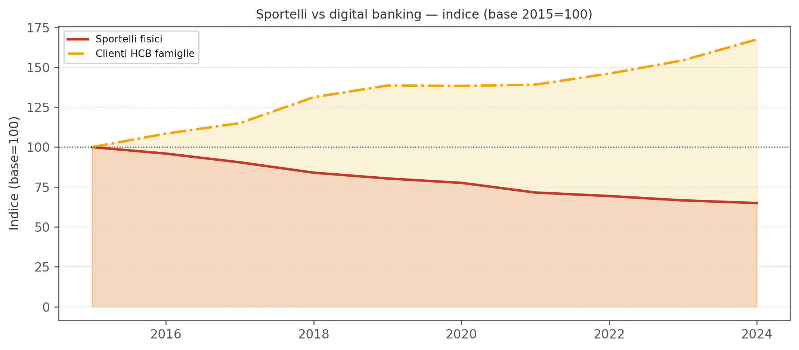
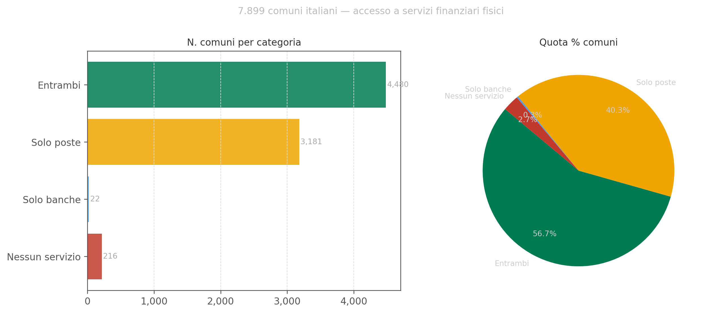
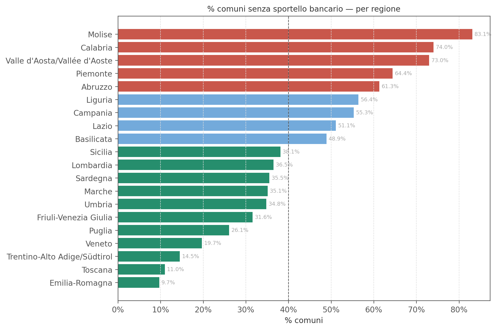
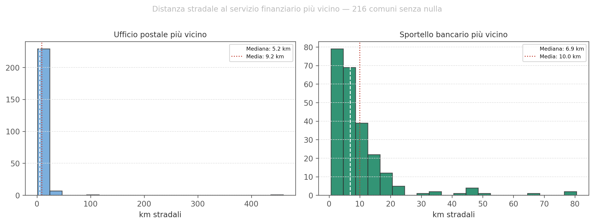
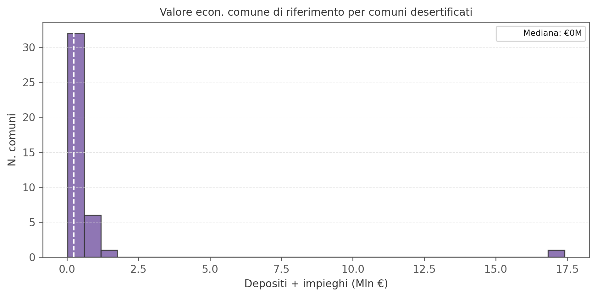
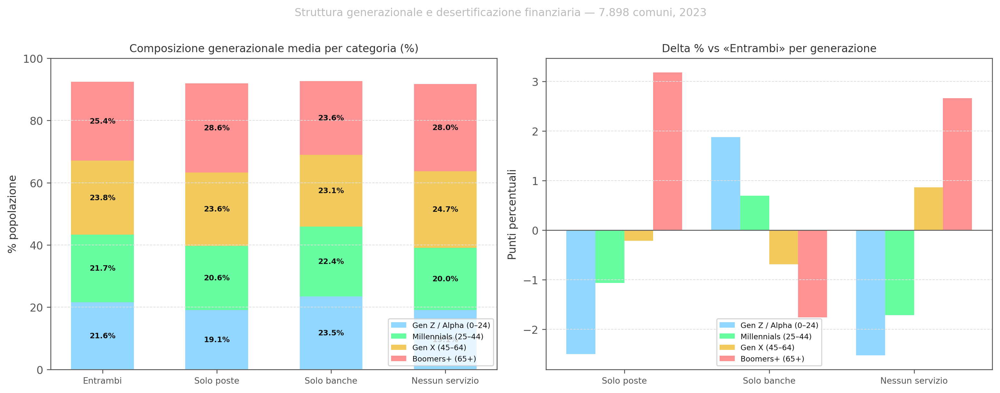
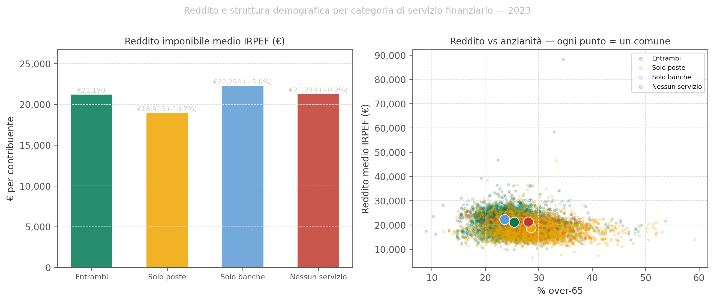
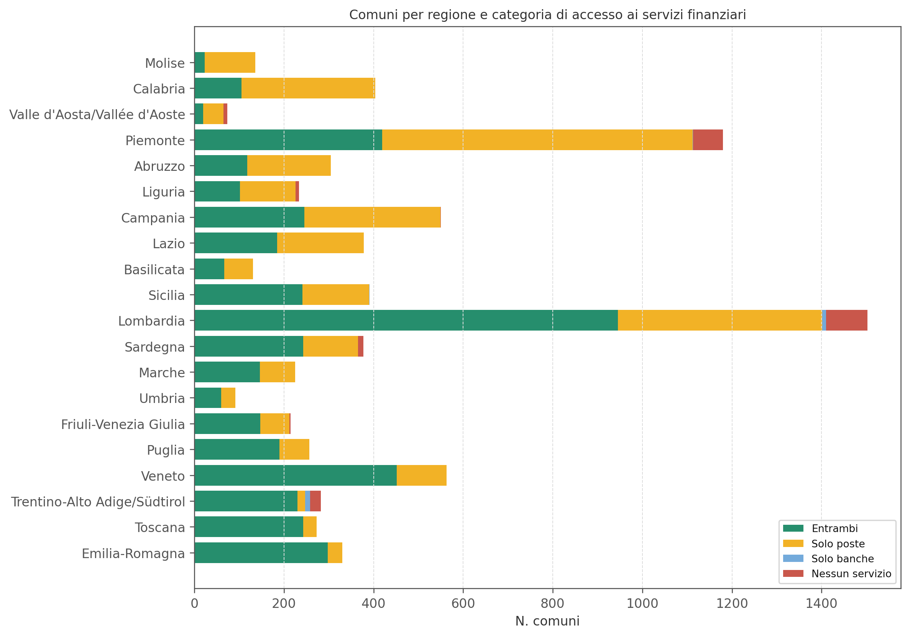
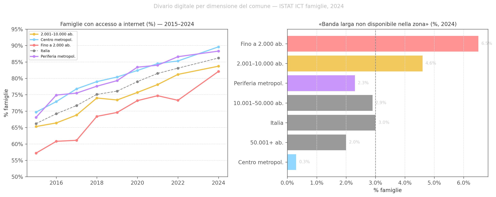

Figura 1: Sportelli fisici e clienti HCB famiglie — Italia, 2015–2025 (HCB fino al 2024). Indice base=2015. Fonte: Banca d’Italia.
Desertificazione finanziaria, presidio postale e digital banking in Italia
Paolo Volterra ![]()
In dieci anni il sistema bancario italiano ha chiuso oltre un terzo degli sportelli fisici. Il digital banking è cresciuto di multipli nello stesso periodo. La sostituzione è completa? L’analisi integra dati Banca d’Italia (trend macro 2015–2025), il censimento degli sportelli bancari attivi (19.291 sportelli, 407 banche) e degli uffici postali per comune (12.615 UP). Su 7.899 comuni italiani, il 40% non ha più uno sportello bancario; in 216 non c’è né una banca né un ufficio postale. Per la clientela digitalizzata lo sportello fisico è quasi superfluo; per anziani, aree interne e PMI in situazione di stress, resta insostituibile.
desertificazione finanziaria, sportelli bancari, Poste Italiane, digital banking, inclusione finanziaria, aree interne
In dieci anni il sistema bancario italiano ha chiuso sistematicamente la propria rete fisica. Dal 2015 al 2024 sono scomparsi oltre 10.000 sportelli: la contrazione è il risultato di tre forze convergenti — la pressione sui costi operativi delle banche, la crescita del digital banking che ha ridotto il traffico in filiale, e la sequenza di fusioni e incorporazioni che hanno eliminato le sovrapposizioni nelle reti commerciali. Nel frattempo i clienti di home banking (HCB) sono cresciuti di un fattore tre o più.

Figura 1: Sportelli fisici e clienti HCB famiglie — Italia, 2015–2025 (HCB fino al 2024). Indice base=2015. Fonte: Banca d’Italia.
Il grafico indicizzato rende immediatamente visibile la sostituzione: le due curve divergono con continuità, senza interruzioni. Il punto critico non è nel grafico — è ciò che il grafico non mostra: chi rimane indietro nella curva digitale? L’adozione di home banking non è uniforme per età, territorio e tipo di operazione. Per rispondere bisogna scendere al livello del singolo comune.
Incrociando il censimento degli sportelli bancari attivi (fonte GIAVA — Banca d’Italia, 19.291 sportelli, 407 banche) con la mappatura degli uffici postali (12.615 UP, fonte API Poste Italiane), ogni comune italiano rientra in una delle quattro categorie seguenti.
| Categoria | N. comuni | % comuni | Presenza banca | Presenza UP |
|---|---|---|---|---|
| Entrambi | 4,480 | 56.7% | ✓ | ✓ |
| Solo poste | 3,181 | 40.3% | ✗ | ✓ |
| Solo banche | 22 | 0.3% | ✓ | ✗ |
| Nessun servizio | 216 | 2.7% | ✗ | ✗ |
Tabella 1: Comuni italiani per presenza di sportelli bancari e uffici postali. Fonte: GIAVA Banca d’Italia, Poste Italiane, elaborazioni dell’autore.

Figura 2: Distribuzione dei 7.899 comuni italiani per categoria di accesso ai servizi finanziari. Fonte: elaborazioni dell’autore.
I numeri sono più severi di quanto il dibattito pubblico generalmente riconosca. Il 40% dei comuni italiani non ha uno sportello bancario: 3.181 comuni (40,3%) hanno come unica presenza finanziaria fisica un ufficio postale. In altri 216 comuni non esiste né una banca né un ufficio postale. In totale, oltre 3.400 comuni — quasi il 44% — hanno un accesso ai servizi finanziari fisici ridotto o assente.

Figura 3: Quota comuni senza sportello bancario per regione (%). Include ‘Solo poste’ e ‘Nessun servizio’. Fonte: elaborazioni dell’autore.
La distribuzione geografica rivela una forte asimmetria: le regioni con la quota più elevata di comuni senza sportello bancario sono prevalentemente quelle con un tessuto di piccoli comuni montani e collinari (Valle d’Aosta, Molise, Basilicata, ma anche Lombardia e Piemonte per il numero assoluto di comuni alpini). Non si tratta dunque di un fenomeno meridionale tout court: è un fenomeno delle aree a bassa densità demografica, indipendentemente dalla latitudine.
I 216 comuni classificati come “Nessun servizio” sono il caso estremo: non vi è né uno sportello bancario né un ufficio postale operativo. Per i residenti, qualsiasi operazione finanziaria — un pagamento, un prelievo di contante, la consegna di un plico raccomandate — richiede uno spostamento verso il comune più vicino.

Figura 4: Distribuzione km stradali al servizio più vicino (UP o sportello bancario) per i 216 comuni ‘Nessun servizio’. Fonte: elaborazioni dell’autore.
| Servizio | Mediana (km) | Media (km) | Max (km) | > 20 km (n) |
|---|---|---|---|---|
| Ufficio postale più vicino | 5.2 | 9.2 | 459.3 | 11 |
| Sportello bancario più vicino | 6.9 | 10.0 | 80.5 | 17 |
Tabella 2: Statistiche distanze stradali per i 216 comuni ‘Nessun servizio’ (km). Fonte: elaborazioni dell’autore.
Le distanze mediane sono contenute nella maggior parte dei casi, ma la coda destra della distribuzione è preoccupante: per una minoranza di comuni le distanze stradali al servizio più vicino superano i 20 km, e in casi estremi si avvicinano ai 100 km. In territori montani o insulari, queste distanze non sono solo scomode — possono essere praticabili solo in certi periodi dell’anno e richiedono un mezzo proprio o un servizio di trasporto che molti residenti anziani non hanno.
Il caso di Lampedusa e Linosa è emblematico: 143 km in linea d’aria all’ufficio postale più vicino (Pantelleria), con unica alternativa lo sportello bancario a meno di 3 km stradali sull’isola stessa. Ogni comune nasconde una storia geografica diversa.
Un modo per misurare la posta in gioco è stimare il volume di depositi e impieghi bancari nei comuni senza servizi finanziari. Il dato non è direttamente disponibile per i 216 comuni “Nessun servizio” (troppo piccoli per le statistiche TFR10194 di Banca d’Italia, che aggregano a livello di sportello), ma è approssimabile dal valore economico dei comuni vicini che li “servono”.

Figura 5: Distribuzione del valore economico (depositi + impieghi, Mln €) per comune di riferimento dei 216 desertificati. Fonte: elaborazioni su Banca d’Italia TFR10194.
I comuni di riferimento — cioè i centri verso cui i residenti dei comuni desertificati devono spostarsi per accedere ai servizi — sono nella maggior parte dei casi piccoli centri con volumi finanziari modesti. Questo non significa che l’esclusione sia economicamente irrilevante: il danno è prevalentemente un costo di accesso (tempo, trasporto, rinuncia) che ricade sui soggetti meno mobili, non direttamente misurabile in volumi di raccolta.
La domanda “servono gli sportelli fisici?” non ha una risposta binaria. La risposta è segmentata per tipo di cliente e per tipo di operazione.
| Segmento | Operazioni tipiche | Ruolo dello sportello fisico |
|---|---|---|
| Clientela digitalizzata | Pagamenti, bonifici, saldo, estratto conto | Quasi superfluo. App/web sufficienti al 95%. Uso residuale: mutuo, reclamo. |
| PMI e professionisti | Tesoreria ordinaria, corporate banking, pagamenti massivi | Efficiente in condizioni normali. Critico in fase di stress (rinnovo fido, ristrutturazione del debito). |
| Anziani, aree interne, fragili | Prelievo, bollette, bonifico, apertura rapporto | Insostituibile. Digitale non adottato o non accessibile. Poste Italiane = presidio minimo. |
Tabella 3: Utilità dello sportello fisico per segmento di clientela e tipo di operazione.
Il dato più rilevante per la policy non è il numero di sportelli chiusi in assoluto, ma il numero di comuni in cui la sostituzione digitale non funziona perché le condizioni di adozione non ci sono. Oggi in Italia:

Figura 6: Struttura generazionale per categoria di accesso ai servizi finanziari (anno 2023, % della popolazione residente). Fonte: ISTAT, elaborazioni dell’autore.
La struttura demografica delle aree desertificate rivela un doppio effetto generazionale. I comuni “Solo poste” e “Nessun servizio” non solo ospitano più Boomers+ (28,6% e 28,0% vs 25,4% nei comuni con entrambi i servizi), ma hanno anche meno giovani: la quota Gen Z / Alpha scende al 19,1% contro il 21,6% delle aree pienamente servite (−2,5 pp), e i Millennials al 20,6% contro il 21,7% (−1,1 pp). È il profilo demografico classico delle aree in declino e spopolamento: i giovani se ne vanno, i più anziani rimangono.
Questo duplice fenomeno è direttamente rilevante per la transizione cashless: la popolazione che rimarrebbe nel territorio e che potrebbe trainare l’adozione digitale (Gen Z, Millennials) è sottorappresentata, mentre quella con la minore propensione al digitale (Boomers+) è sovrarappresentata. La sostituzione digitale trova terreno fertile dove è meno necessaria, e terreno arido dove sarebbe più urgente.

Figura 7: Reddito imponibile medio IRPEF per contribuente (€, anno 2023) e quota over-65 per categoria di accesso ai servizi finanziari. Fonte: ISTAT, elaborazioni dell’autore.
Il dato reddituale rafforza il quadro demografico. I comuni “Solo poste” — già i più anziani — sono anche i più poveri: il reddito imponibile medio per contribuente è €18.915, circa €2.300 in meno (−11%) rispetto ai comuni con entrambi i servizi. Lo scatter conferma la correlazione: al crescere della quota over-65 tende a scendere il reddito medio, e i comuni gialli (Solo poste) si addensano nell’angolo in alto a sinistra — alta anzianità, basso reddito. Sono esattamente le condizioni che rendono impraticabile la sostituzione digitale.
L’11° Rapporto della Community Cashless Society (TEHA Group / Ambrosetti, marzo 2026) documenta €459 miliardi di transato digitale nel 2024 (+7,4%), pari al 42,7% dei consumi delle famiglie. Eppure l’Italia rimane al 31° posto mondiale per dipendenza dal contante (Cash Intensity = 11,5% del PIL) e al 21° posto in UE per stato di avanzamento della cashless society — perdendo una posizione rispetto al 2025.
Il Rapporto individua la causa nel gap demografico e geografico: la velocità e comodità del digitale motiva il 68% dei 18-24enni, ma solo il 42,4% degli over-60. Al Sud e nelle Isole 1 cittadino su 3 segnala rifiuto del POS (contro 1 su 4 a livello nazionale); i pagamenti cashless coprono il 75,6% delle spese ricorrenti al Nord Ovest, ma scendono al 71,6% al Sud e nelle Isole.
I dati di questo documento mostrano perché questo gap persiste: il 40% dei comuni italiani — prevalentemente abitati da over-65 (28,6% vs 25,4% dei comuni con entrambi i servizi) e con redditi IRPEF medi inferiori di €2.300 — non ha più uno sportello bancario. In questi territori la pressione verso il cashless non genera adozione: genera esclusione. La filiale bancaria non era solo un punto di pagamento — era l’infrastruttura che ha storicamente facilitato l’onboarding digitale della clientela meno autonoma.
Il rischio concreto è una cashless society a due velocità: digitale e integrata nelle aree urbane, contante-dipendente nelle aree interne. Finché la transizione cashless non si accompagna a presidi fisici alternativi nei territori desertificati, i benefici sistemici stimati dal Rapporto — riduzione dell’economia sommersa, inclusione finanziaria, efficienza della PA — rimarranno concentrati dove l’adozione è già alta.

Figura 8: Comuni per regione e categoria di accesso ai servizi finanziari. Fonte: elaborazioni dell’autore.
Alla chiusura degli sportelli fisici e alla struttura demografica sfavorevole si aggiunge un terzo fattore: la copertura della banda larga. Se il digital banking è l’alternativa proposta alla filiale, la sua praticabilità dipende dall’esistenza di una connessione adeguata. I dati ISTAT sull’accesso a internet per classe dimensionale di comune (indagine sulle famiglie, 2015–2024) mostrano un divario strutturale e persistente tra piccoli comuni e aree metropolitane.

Figura 9: Famiglie con accesso a internet e quota che dichiara ‘banda larga non disponibile nella zona’, per classe dimensionale di comune (2015–2024). Fonte: ISTAT, indagine ICT famiglie, elaborazioni dell’autore.
Il divario è significativo e persistente. Nel 2024, nei comuni fino a 2.000 abitanti — la classe che ospita la quota maggiore di comuni desertificati — solo il 82,1% delle famiglie ha accesso a internet, contro l’89,6% nei centri metropolitani (−7,5 punti percentuali). Soprattutto, il 6,5% delle famiglie in questi piccoli comuni dichiara che la banda larga semplicemente non è disponibile nella propria zona: più del doppio della media nazionale (3,0%) e oltre venti volte il dato dei centri metropolitani (0,3%).
Questo terzo elemento chiude il quadro dell’esclusione a tripla barriera: mancanza di sportello fisico, struttura demografica con scarsa propensione al digitale, infrastruttura di connettività insufficiente. In questo contesto, proporre il digital banking come sostituto automatico della filiale equivale a proporre il trasporto aereo come alternativa alla strada in un territorio senza aeroporti.
Risposta 1 — Sì, per la banca. Il digital banking ha sostituito quasi completamente lo sportello fisico per la clientela attiva, giovane, urbana e digitalizzata. Le banche sono razionali nel chiudere filiali: ogni chiusura genera risparmi reali senza perdere i clienti più redditizi, che migrano agevolmente sul canale app. Per questo segmento lo sportello fisico è un residuo.
Risposta 2 — Parzialmente, per le PMI. Il corporate banking online funziona bene in condizioni normali. Il problema emerge nelle fasi di stress: rinnovo del fido, ristrutturazione del debito, apertura di nuove linee. Queste operazioni richiedono ancora il rapporto diretto con il gestore, perché implicano discrezionalità, fiducia e trasmissione di informazioni soft che il canale digitale non veicola efficacemente.
Risposta 3 — No, per i fragili. Per anziani, residenti di aree interne, soggetti con bassa alfabetizzazione finanziaria e digitale, lo sportello fisico è ancora l’unico punto di accesso reale ai servizi bancari. La sua scomparsa non genera un’adozione accelerata del digitale — genera esclusione. Il presidio postale attenua ma non elimina questo rischio: 216 comuni italiani non hanno né l’uno né l’altro.
Il sistema sta trasferendo sul cliente un costo che prima era internalizzato dalla banca: il costo dell’accesso fisico ai servizi. Per la clientela digitalizzata questo costo è nullo (accede da casa). Per gli altri è un costo reale — in tempo, mobilità, autonomia — che le statistiche di settore non misurano. La valutazione dell’utilità dello sportello fisico non può prescindere da chi sopporta questo costo e se ha alternative reali.